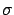
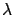
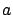
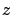

Este modelo, presentado por Vinko Erceg et al. en 1999
[17], es un modelo empírico de predicción de pérdida de
camino basado en exhaustivas mediciones realizadas por AT&T
Wireless Services a lo largo del territorio de Estados Unidos,
cubriendo 95 macroceldas de 1.9 GHz (por detalles de la campaña de
medidas ver [17]).
Se aplica a entornos suburbanos, y a su vez distingue entre tres
diferentes categorías de terreno. La caracterización consiste en una
curva lineal de potencia en función de distancia (ambos ejes en
escala logarítmica), con una variación gaussiana entorno a dicha
recta debida al efecto de shadowing, variaciones de
potencia provocadas principalmente por la vegetación. El aspecto más
novedoso del modelo es que tanto el exponente de pérdida de camino
(pendiente de la recta), como la desviación estándar del
shadowing, , varían aleatoriamente de una celda a otra, y
esto es modelado estadísticamente mediante variables aleatorias
gaussianas cuyos parámetros dependen explícitamente de la altura del
móvil y del tipo de terreno.
Con este modelo se intentan cubrir algunas carencias de los modelos
de predicción ya existentes, de cara a los nuevos sistemas de
comunicación (como servicios de telefonía fija inalámbrica) que
tienen una mayor exigencia en el tipo de tráfico, y han motivado
ciertas tendencias en los sistemas celulares como ser reducción del
tamaño de las celdas, disminución de la altura de las radiobases y
aumento de las frecuencias. Por ejemplo, el modelo de Okumura-Hata,
que es el más usado para entornos suburbanos de macroceldas, no da
buenos resultados para los casos de altura de radiobase baja (menor
a 30 m), altura de móvil alta (mayor que 2 m), terrenos ondulados o
con alta densidad de vegetación; limitaciones que se corrigen en
este nuevo modelo, de creciente popularidad en la actualidad. El
mismo es parte de la caracterización de los canales inalámbricos
denominados SUI channels, desarrollados por el grupo de
trabajo de la Stanford University Interim, que incluyen además el
modelado del mutipath delay spread, las variaciones de
señal (fading), el Doppler spread e interferencia
[18].
Como se dijo anteriormente, distingue dentro del entorno suburbano
tres categorías diferentes de terreno. Las condiciones de mayor
pérdida de camino se engloban en la categoría A, terreno ondulado
con densidad de vegetación media a alta. Le sigue la categoría B,
que incluye tanto terrenos ondulados con baja densidad de vegetación
como terrenos llanos pero densamente arbolados. Finalmente, la
categoría de condiciones más favorables para la propagación
(categoría C) es aquélla caracterizada por terrenos llanos que a su
vez poseen baja densidad de árboles. Ha dado también buenos
resultados la aplicación de este modelo en entornos urbanos
[19][18]; lo más apropiado parecería ser
utilizar los parámetros del terreno tipo B, aunque de acuerdo a las
características del entorno podría también usarse el A.
La pérdida de camino en decibeles puede escribirse como:
siendo 100 m la distancia de referencia y  la
longitud de onda en metros.
El exponente de pérdida de camino, , es una variable
aleatoria gaussiana, que puede expresarse de la siguiente manera:
El término entre paréntesis corresponde a la media y
a la desviación estándar ( es una v.a. ). es la
altura (sobre el terreno) de la radiobase en metros; , y ,
con sus respectivas unidades, son constantes ajustadas
empíricamente, que al igual que
dependen de la
categoría de terreno y están dadas por el cuadro 5.1.
El término de la ecuación (5.1) representa el efecto
de shadowing y se modela como una variable aleatoria
lognormal de media nula, cuya desviación estándar también es una
variable aleatoria gaussiana que puede escribirse como:
en donde
es la media,
la varianza y 
una v.a. . Los valores numéricos de estas contantes para las
diferentes categorías de terreno pueden encontrarse también en el
cuadro 5.1.
Tabla 5.1:
Valores numéricos de los parámetros del modelo de
Erceg